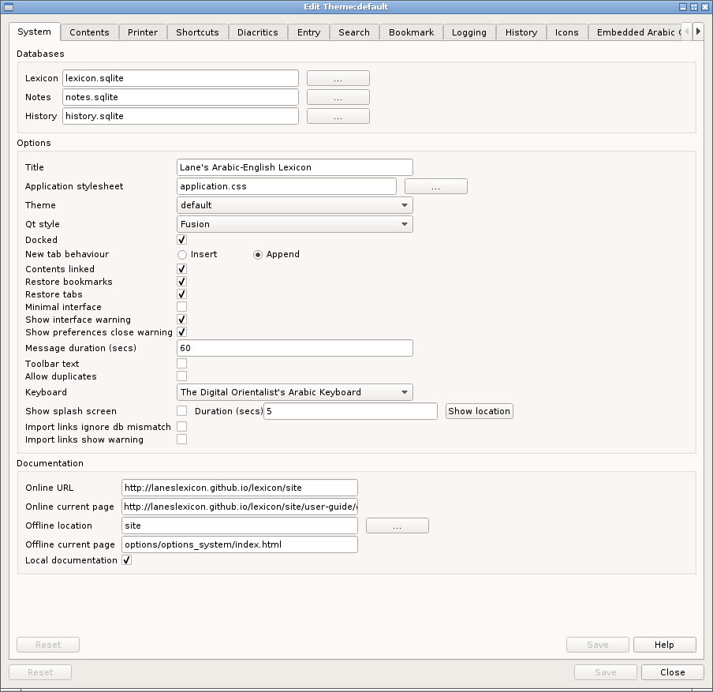

Databases
The Lexicon database is the main system databae and holds all the entries in the lexicon.
The notes database stores user notes and pageset information while the history database stores visited locations for later retrieval (if enabled, see here).
New tab behaviour
New tabs can be either inserted after the current tab or added at the end of the current tabs.
Contents linked
Whether the current entry in the tree of roots is to be kept in sync with the current tab. This setting is displayed on the status bar.
Application stylesheet
The name of the stylesheet that controls the appearance of the application. The name must not include path information and the file must be placed in the correct directory (as described here.
Theme
The name of the current theme. The drop-down box shows available themes. Changing the theme here has no effect on the theme of the currently running application.
Toolbar text
When checked, short text descriptions of the toolbar icons are shown underneath the icon.
Allow duplicates
When requesting a root or entry, the system checks whether the required entry is already visible in an existing tab and switches to that tab if it is. If this option is set, this check is skipped.
Keyboard
The name of the current virtual keyboard. The drop-down box list the alternatives. (Details of virtual keyboards can be found here
Message duration
This setting specifies how long a message will remain on the status bar before being clear. Units are milliseconds.
Show splash screen
When checked, a random file from the images/splash subdirectory of the current theme directory is shown as the application starts.
Documentation
The application documentation can be viewed either locally or online and the entries in this section specify the location of both.
The offline location is relative to the current working directory.